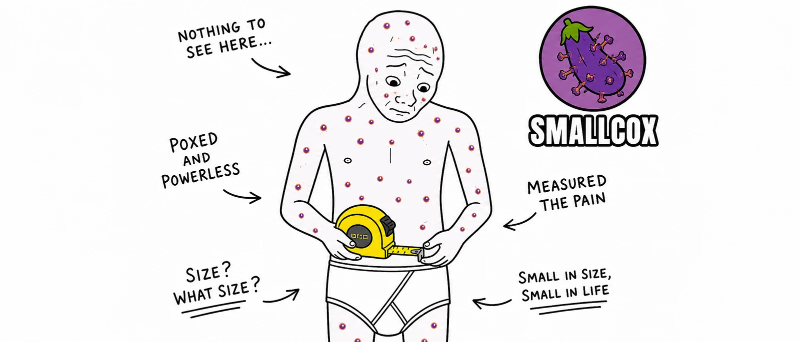

Outbreak confirmed · Solana
SMALLCOX
$COX The only virus that pumps.

Scientists confirmed the hantavirus could shrink the average man by three inches. The comedian Mark Normand quoted it with one word. We minted it on Solana. The chart did the rest.
01Patient Zero
It started with a tweet.
— and one word from Mark Normand.
On a Tuesday, the timeline coughed. A wire-service post claimed the hantavirus could shorten the average man by three inches. The comedian Mark Normand, contacted while walking past a Honda, replied with one word.
That word is now a token. $COX indexes a simple thesis: anything that can be laughed at can be priced, and anything that can be priced eventually is. We minted the joke. The market did the rest.
Smallcox
— mark normand (@marknorm) View on X
Containment footage · 04:20 PM
No survivors. No refunds.
02Symptoms
Side effects may include
-
01
Portfolio engorgement
Sudden inflation of the unrealized PnL line. Refreshing the chart becomes involuntary.
Acute -
02
FOMO fever
Body temperature tracks green candles. Cold sweats reported in those who sold the bottom.
Fever -
03
Memetic shedding
Carriers infect three contacts in 24 hours. Vector of transmission: a shared link.
Airborne -
04
Diamond calluses
Hands fuse to phones within minutes of first exposure. Permanent. Often desired.
Chronic -
05
Shrinkage
Documented in 100% of Sundays. Resolves by Monday. Studies remain inconclusive.
Cyclical -
06
Cult formation
Carriers refer to themselves as “the infected.” Group chats double as treatment centers.
Terminal
03How to catch it
Four steps to exposure.
-
01
Phantom
Install Phantom Wallet — Solana's host of choice.
-
02
Fund
Bridge SOL from any exchange. The virus prefers a warm wallet.
-
03
Swap
Open Jupiter. Paste the CA. Confirm.
-
04
Spread
Post once. Forward twice. The infection is the alpha.
04The Strain
Lab-leaked tokenomics.
Spread it.
No mask required. No mask permitted.
$COX is a meme. Not financial advice. Not medical advice. Not endorsed by any person quoted on this page. The eggplant has no inherent value, only spiritual.